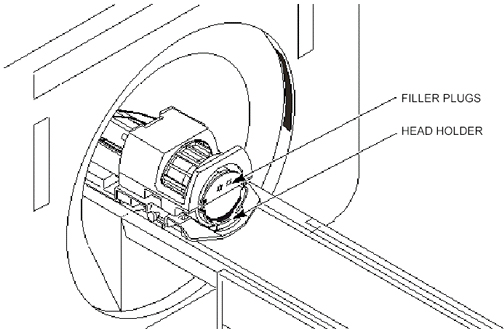
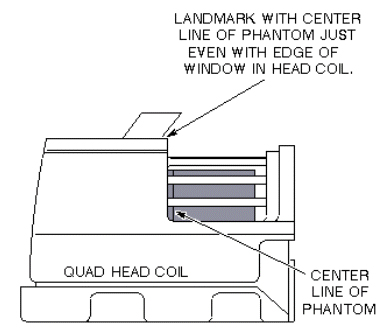
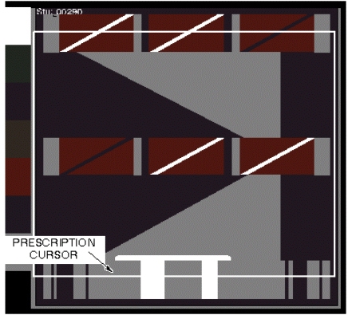
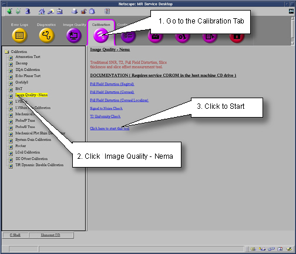
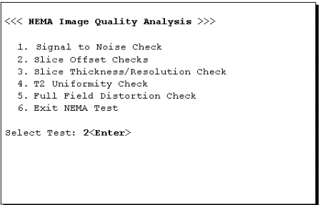
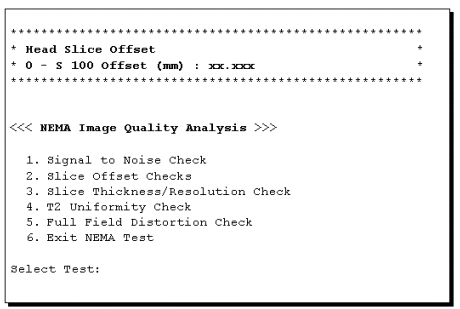

Operating Documentation
Direction 5133330-3, Rev# 14
Signa EXCITE HD 3.0T Service Methods
Module Version 1.0, Version Date 5/3/07
Operating Documentation |
| Required Persons | Preliminary Reqs | Procedure | Finalization |
|---|---|---|---|
| 1 | Not Applicable | 30 mins | Not Applicable |
Slice offset is determined by performing a multiscan sequence on the Head Axial Slice Analysis Phantom, and imaging between the slice thickness plates. There are two ramps inside the phantom that extend between the three plates. The ramps originate at the center of the center plate and rise at an angle of 63.4°. The offset between the image slices is calculated by measuring the length of the ramp image.
| NOTE: | For TwinSpeed, the test should be repeated separately for each Gradient mode. |
| NOTE: | It is important that the correct Head Axial Slice Analysis Phantom, 46-287379G1, is used in this procedure. Other Head Axial Slice Analysis Phantoms will not give the correct results. |
| Item | Qty | Effectivity | Part# | Manufacturer | |
|---|---|---|---|---|---|
| Head Axial Slice Analysis Phantom | 1 | - | 46-287379G1 | - | |
Place the phantom in the head coil on top of the head holder. Position the filler plugs (resolution end of phantom) toward the foot-end of table. See Illustration 1. Landmark the phantom on the center plate (see Illustration 2 for landmarking phantom). Press MOVE TO SCAN.
Illustration 1: AXIAL SLICE ANALYSIS PHANTOM POSITIONING

Illustration 2: LANDMARKING PHANTOM IN HEAD COIL

At the operator workspace, select the [Scan] icon in the desktop control panel, if you have not already done so.
Click on [Autoview], just below the Autoview image display screen; your images will be automatically displayed.
At the operator workspace, prepare the system for a Slice Offset Series 1 scan using the "Service Protocols".
Press MOVE TO SCAN button on the operator workspace, then click on [Scan] (system Auto Prescans first).
After scan #1 is complete, click on [New Series]. Prepare scan #2 (Slice Offset Series 2 scan, 2D -50mm Table Delta).
Press the MOVE TO SCAN button on the operator workspace, then click on [Scan] (system Auto Prescans first).
For analysis, refer to SLICE OFFSET IMAGE ANALYSIS.
After Scan #2 is complete, click on [New Series]. Prepare Scan #3 (Slice Offset Series 3 scan, 3D GRE Localizer).
Press the MOVE TO SCAN button on the operator workspace, then click on [Scan] (system Auto Prescans first).
After Scan #3 is complete, click on [New Series]. Prepare Scan #4 (Slice Offset Series 4 scan, 3D GRE 50mm Table Delta).
Click on the [Graphic Rx] window.
A slab box cursor appears on the image. Position the cursor over the center bar of the image (see Illustration 3), then click on [Accept], [Save Series]. Then [Prepare to Scan].
Illustration 3: CURSOR PLACEMENT FOR PRESCRIBING SLICE OFFSET 3D SCAN

Press the MOVE TO SCAN button at the operator workspace, then click on [Scan] (system Auto Prescans first).
After Scan #4 is complete, click on [New Series]. Prepare Scan #5 (Slice Offset Series 5 scan, 3D GRE -50mm Table Delta).
Press MOVE TO SCAN button at the operator work space, then click on [Scan] (system Auto Prescans first).
For analysis, refer to SLICE OFFSET IMAGE ANALYSIS.
| NOTE: | Image annotation is relative to original landmark; images are always annotated "I 50", "S 50" for all offset image pairs. |
To run the Image Quality Analysis – NEMA tool from the Service Desktop, follow the instructions on Illustration 4, below.
Illustration 4: STARTING THE IMAGE QUALITY - NEMA TOOL FROM THE SERVICE BROWSER

For TwinSpeed, highlight the same GradMode that was used with sections 2D SCANS and 3D SCANS above, then click on [OK].
A NEMA Image Quality window appears on the desktop. Type 2<Enter> for Slice Offset Checks. See Illustration 5.
Illustration 5: NEMA IMAGE QUALITY MENU

Enter the first image exam, series, and image numbers.
| NOTE: | Select the slices nearest I = 50 mm and S = 50 mm when performing the analysis on the 3D scan images. |
Enter the second image series and image numbers. The second image Exam Number should be the same as the first image.
| NOTE: | Select the slices nearest I = 50 mm and S = 50 mm when performing the analysis on the 3D scan images. |
Analysis then begins. The final values are displayed on the screen, as shown in Illustration 6.
Illustration 6: SLICE OFFSET RESULTS SCREEN

Record the Measured Offset in Data Sheet 1, Head Slice Offset Data. For TwinSpeed, identify the GradMode used.
Repeat steps Step 3 through 7 above for analysis of the remaining images.
Type 6 and press <Enter> to exit the NEMA Image Quality Analysis Menu.
Return the system to a patient scanning condition.
Do a check scan to insure proper operation.